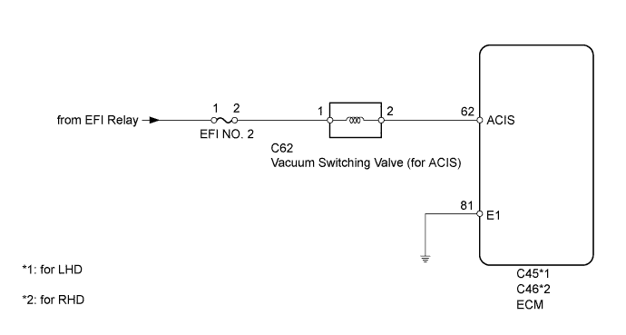
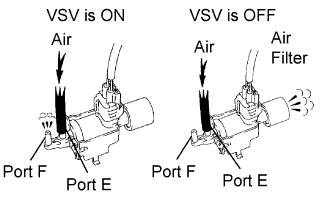
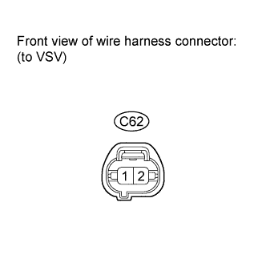
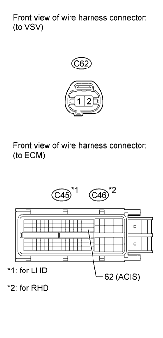
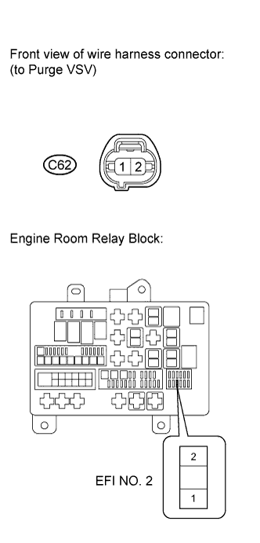

SFI SYSTEM > ACIS Control Circuit |


| 1.PERFORM ACTIVE TEST USING INTELLIGENT TESTER (OPERATE VSV (for ACIS)) |
 |
Disconnect the vacuum hose from port F on the vacuum switching valve (for ACIS).
Connect the intelligent tester to the DLC3.
Start the engine.
Enter the following menus: Powertrain / Engine and ECT / Active Test / Active the VSV for Intake Control.
Operate the VSV for ACIS.
Check the VSV air flow when switching the VSV.
| Test Condition | Specified Condition |
| VSV is ON | Air from port E flows out through port F |
| VSV is OFF | Air from port E flows out through air filter |
|
| ||||
| OK | |
| 2.INSPECT INTAKE MANIFOLD (INTAKE AIR CONTROL VALVE OPERATION) |
Inspect the intake air control valve operation (Click here).
|
| ||||
| OK | ||
| ||
| 3.INSPECT VACUUM SWITCHING VALVE (for ACIS) |
Inspect the vacuum switching valve (Click here).
|
| ||||
| OK | |
| 4.INSPECT VACUUM SWITCHING VALVE (POWER SOURCE VOLTAGE) |
 |
Disconnect the VSV connector.
Turn the engine switch on (IG).
Measure the voltage according to the value(s) in the table below.
| Tester Connection | Switch Condition | Specified Condition |
| C62-1 - Body ground | Engine switch on (IG) | 11 to 14 V |
|
| ||||
| OK | |
| 5.CHECK HARNESS AND CONNECTOR (VSV - ECM)) |
 |
Disconnect the VSV connector.
Disconnect the ECM connector.
Measure the resistance according to the value(s) in the table below.
| Tester Connection | Condition | Specified Condition |
| C62-2 - C45-62 (ACIS) | Always | Below 1 Ω |
| C62-2 or C45-62 (ACIS) - Body ground | Always | 10 kΩ or higher |
| Tester Connection | Condition | Specified Condition |
| C62-2 - C46-62 (ACIS) | Always | Below 1 Ω |
| C62-2 or C46-62 (ACIS) - Body ground | Always | 10 kΩ or higher |
|
| ||||
| OK | |
| 6.REPLACE ECM |
Replace the ECM (Click here).
| NEXT | |
| 7.CHECK PROBLEM SYMPTOM DISAPPEARS |
Check if the problem symptom disappears.
| Result | Proceed to |
| Problem symptom disappears | A |
| Problem symptom does not disappear | B |
|
| ||||
| A | ||
| ||
| 8.CHECK HARNESS AND CONNECTOR (VSV - EFI NO. 2 FUSE) |
 |
Disconnect the VSV connector.
Remove the EFI No. 2 fuse from the engine room relay block.
Measure the resistance according to the value(s) in the table below.
| Tester Connection | Condition | Specified Condition |
| C62-1 - EFI No. 2 fuse terminal 2 | Always | Below 1 Ω |
| C62-1 or EFI No. 2 fuse terminal 2 - Body ground | Always | 10 kΩ or higher |
|
| ||||
| OK | ||
| ||